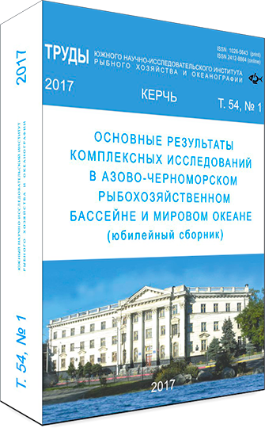

КФ ("ЮгНИРО") ФГБНУ "АзНИИРХ" – филиал научно-исследовательского института, проводящий многоплановые научные, конструкторские и консультативно-экспертные исследования в области морского рыбного хозяйства и промысловой океанографии.
В соответствии с приказом Министерства сельского хозяйства Российской Федерации №389 от 29 августа 2016 года ФБГНУ "ЮгНИРО" был реорганизован в формате слияния в структуру Керченского филиала "ЮгНИРО" ФГБНУ "АзНИИРХ".
Керченский филиал ("ЮгНИРО") ФГБНУ "АзНИИРХ" – филиал научно-исследовательского института, проводящий многоплановые научные, конструкторские и консультативно-экспертные исследования в области морского рыбного хозяйства и промысловой океанографии.
КФ ЮгНИРО ведет исследования в Азово-Черноморском регионе, обширных акваториях Атлантического, Индийского и Тихого океанов, в водах Антарктики.
Главная цель работы коллектива КФ ("ЮгНИРО") АзНИИРХ – научное обеспечение современной деятельности и развития морского рыбного хозяйства РФ путем разработки и реализации комплексных мер долгосрочного сохранения и устойчивого использования морских живых ресурсов.
В состав института входят отделы: морских живых ресурсов Азово-Черноморского бассейна, биоресурсов Мирового океана и промысловой океанологии; лаборатории: культивирования моллюсков, культивирования рыб, охраны морских экосистем, биологически активных препаратов, техники промышленного рыболовства; секторы: информации и издательства, стандартизации рыбной продукции; научно-исследовательские базы: «Заветное» (специализация – воспроизводство и культивирование морских рыб).
Институт располагает центром приема спутниковой информации, издательским центром, научно-производственной базой; имеет музей морской фауны и флоры, аквариальную, научно-техническую библиотеку, насчитывающую около 80 тыс. печатных и более 8 тыс. рукописных трудов в области океанографии, морской биологии, экологии, рыбного хозяйства и других мореведческих наук. Является национальным партнером в международной информационной системе по водным наукам и рыболовству (АСФИС). Структурные подразделения лабораторий оснащены современным оборудованием и приборами. ЮгНИРО принимает активное участие в работе международных рыбохозяйственных организаций и комиссий, сотрудничая с ФАО, АНТКОМ, НАФО, ЕВРОФИШ, ИНФИШ, ТАСИС, ЮНЕП, БСЕП, РФАРЕ и др. Ученые и специалисты ЮгНИРО проводили и проводят совместные исследования с учеными многих стран: Австралии, Албании, Египта, Йемена, Пакистана, Ирака, Кувейта, Кубы, Вьетнама, Франции, Мозамбика, Республики Сейшельские Острова, Мавритании, Болгарии, Румынии, Турции, Грузии, США, Канады и др.
ЮгНИРО готов к деловому практическому сотрудничеству с научными учреждениями и производственными предприятиями любых форм собственности по всем направлениям своей деятельности.
Сборник Трудов ФГБНУ ЮгНИРО включает статьи по следующим темам: комплексные рыбохозяйственные исследования Азово-Черноморского бассейна и Мирового океана, вопросы морского права, мониторинг водных экосистем, аквакультура, биотехнология и стандартизация.
Первый сборник трудов ЮгНИРО был опубликован в 1993 году. Сборник трудов выходит раз в год.

Список научных лабораторий и других структурных подразделений КФ "ЮгНИРО" ФГБНУ АзНИИРХ и контакты их руководителей.
Керченский сектор информационно-математических исследований
Руководитель: Смирнов С.С.
Почта: unknown@localhostКерченский сектор информационно-математических исследований
Руководитель: Смирнов С.С.
Почта: unknown@localhostул. Свердлова, 2, г. Керчь, Республика Крым, Российская Федерация, 298300